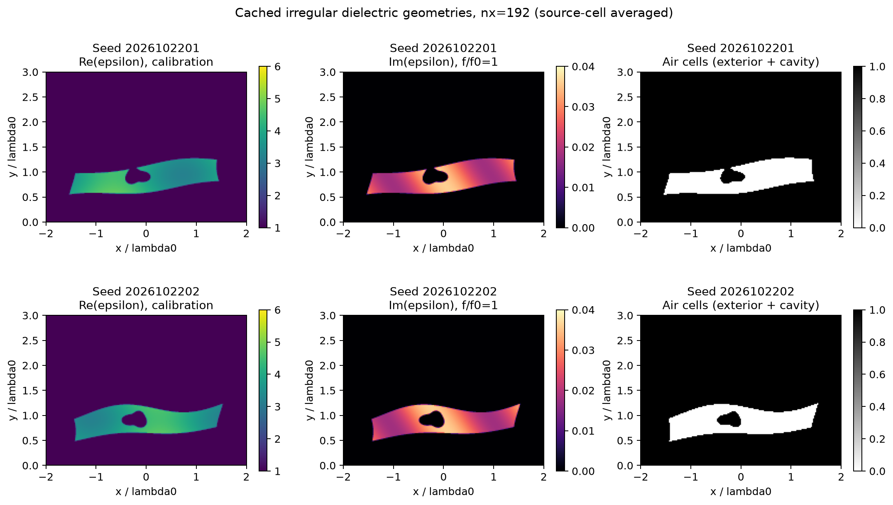
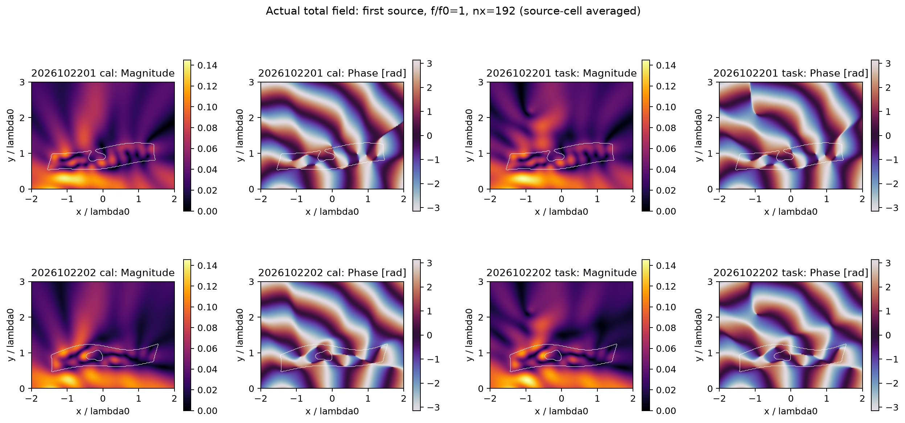
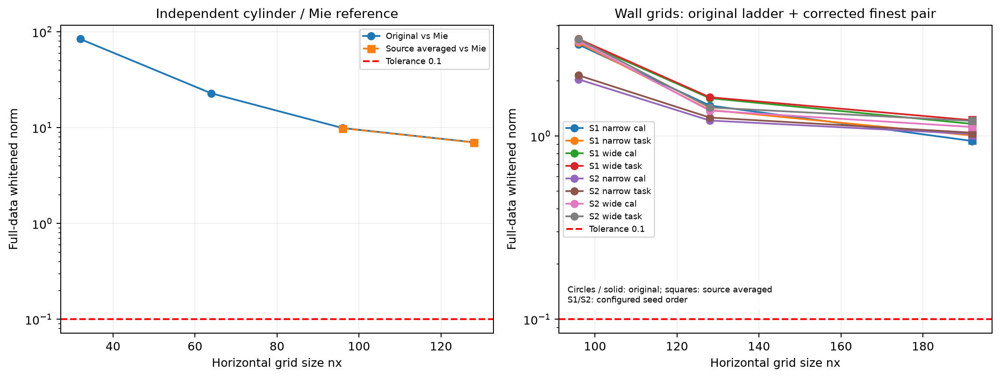
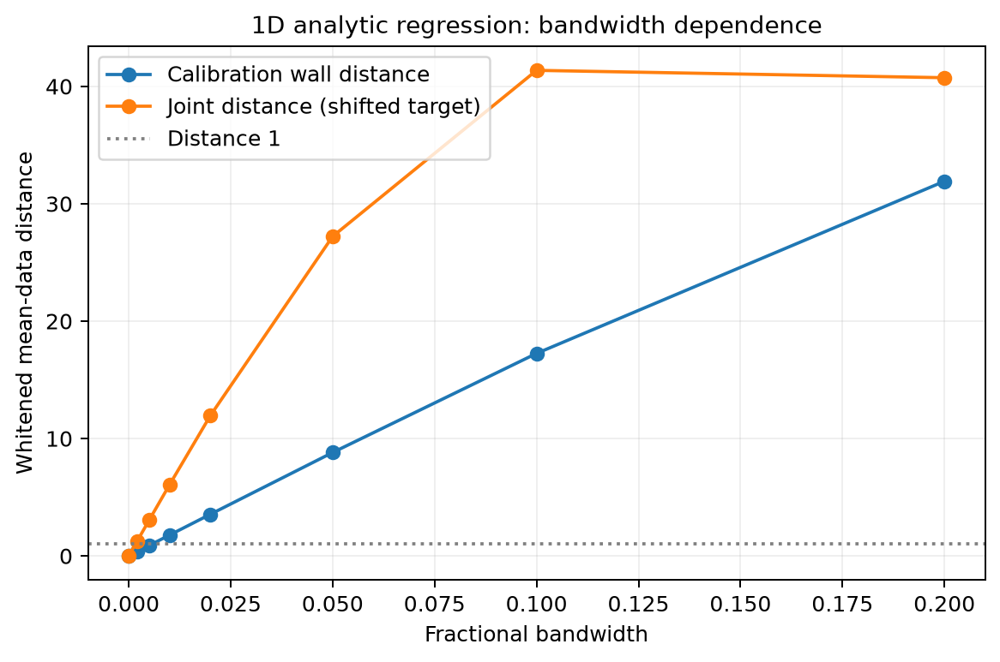
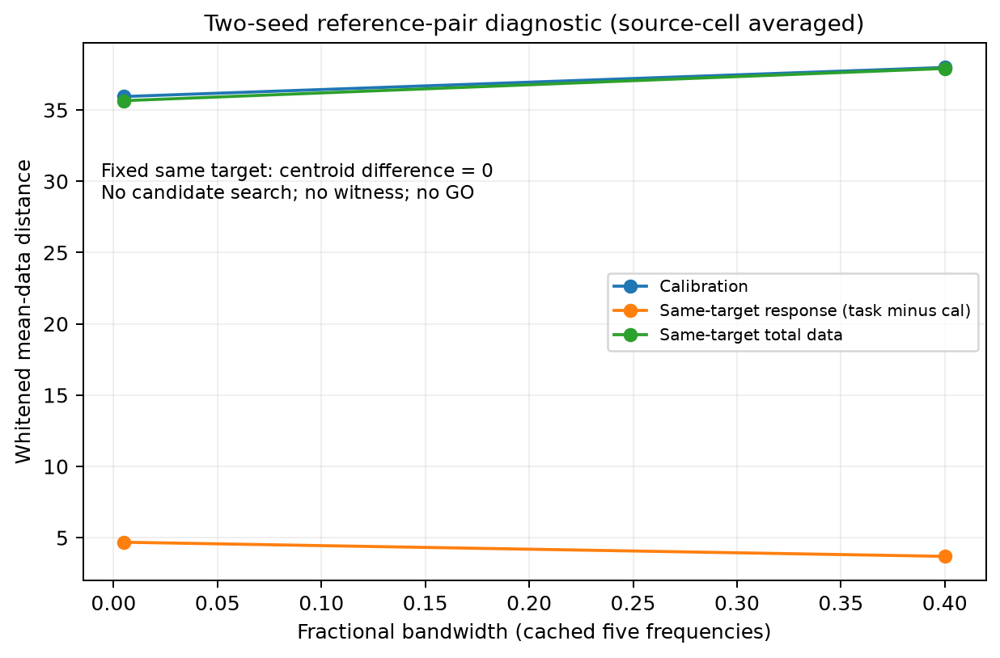
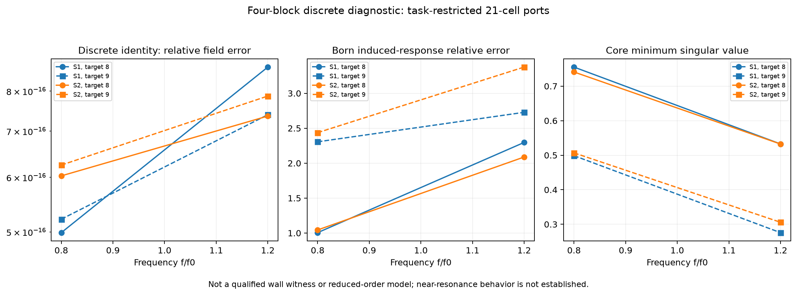

未知不规则墙体的 Maxwell 传播歧义
Research W · P0 · 2026-10-22
重要区别：离散方程解得准确、四块公式正确，并不能证明空间离散已经足够精确，更不能证明算法优越。

固定两世界的真实介电率、损耗和空气区域。
实际第一个源的完整离散总场，非重建或手绘。
最细网格白化变化仍大于0.1：资格未通过。
一维解析回归：完整目标数据会破坏指定补偿。
两个固定参考seed不是搜索见证，目标质心差为0。
同一离散系统的有限四块恒等式，不是连续见证或加速。没有posterior概率、NN、3D或同成本算法优势。全部图片由已保存实验数组生成。